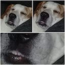
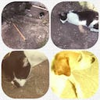
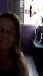
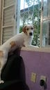
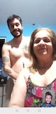
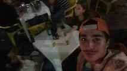

stdmatt's blog
ABOUT |
GITHUB |
PROJECTS
EMAIL |
LINKEDIN |
TWITTER |
INSTAGRAM
Title: Last day of this wonderful year
🎵 Rancid - Fall Back Down
Yeah, at last 2018 is over! It has been a long year with a lot of downsides
and a LOT of upsides ;D
I'm really glad for this year, not only by the good things that happened to
me, but mainly for the bad things that did happen. All of those bad stuff
helped me to understand myself better and become a better person.
I couldn't be more happy for this.
If I would write down all the stuff that I had to went thru, placing the
bad things in one side and the good ones in the another side, I'm mostly
confident that the good side will be filled and the bad sides not too much.
Which is awesome is somethings that I thought to be be at first actually turned
to be good at end. This is a lesson that I glad to learn - nothing is so bad,
that you can't take something good from it and nothing happens without some sacrifice,
so even the best thing will require that you let something behind.
"Saudade"
I miss my mother, my Pingo, my Negresco, my brother and my dad a lot. I can't
express enough how I miss them - in Portuguese we have a word describing this
exactly feeling called "saudade".
I like an quote that I heard very long time ago - I don't remember the author,
but this quote is so strong for me! It's something like:
"Saudade é algo que nunca desaparece, nós apenas nos acostumamos a ela."
Which translates to something like:
"Miss someone is something that never disappears, we only get used to it."
I think that I never had passed thing long without see at least one of them,
it's already 7 months without see anyone, which is hard, but I know that
it's something inside of me that I need to control. Nevertheless is something
quite harsh.
I need calm my mind down on this subject, accept it and try to make the best
with the situation.
I hope that I could bring them in 2019, would be awesome.





Betrayal
As Marcus Aurelius said: "We are each of us stronger that we think".
Anger comes when our naive hope smashes into unexpected reality. We
don't get angry every time that something bad happens, but only when something
happens and turn to be bad and unexpected
I wasn't expecting betrayal - one can argue that no one is expecting that,
but in reality is quite different. I get hurt and that made me suffer quite
a while.
But when I got the understanding that I can't control anything but I my own
thoughts, that I'm not responsible for anything but by my own actions I did
understand that I should expect betrayal and that's ok.
I mean, the attitude is despicable but it did already happened. I got lucky
to know that the other person is like this and get the opportunity to get
out of this kinda toxic mentality.
When I think that I got betrayed, I don't feel bad anymore, I actually feel
happy because fortune gave me another opportunity to find another person
that is more inclined to have towards me a true love as described by Plato.
And if this is not a good think I don't know what might be!
At the end I feel very, very glad for everything that happened and the
way that it happened. I am what I am, part so, because the facts that did
occur and anything that might happened differently would have a different
impact on myself. I'm so happy to the direction that I'm pointing to, and
this feels amazing.
A deep understanding in exchange of something that is bad to other people
is a darn good deal!
Friends
First and foremost, I miss Eduardo Pimenta badly. For all of those years you
were the only guy that looked me with love.
From the first time that we met at MicBH, passing to when you lend me a wifi-modem,
all the Project Euler challenges, the operating systems talks, GSM, goEpik,
fucking nice game nights, all the chess games, pizzas, conversations, everything.
You were (are) a really truly friend and I'm more the grateful to had met you,
I learned much more than teach you - cause everytime that some discussion did
happen I focused so much on teach you the beauty of virtue and the truth that
I learned so much, so thank you, thank you a lot for everything and every single
second that we spent together, physically or not.
Fortune gave me the amazing opportunity to feel beloved, to feel equal,
to feel like people like me for real. This is quite amazing feeling to feel.
I was fortunate enough to met really amazing people here in Portugal that
make me feel light.
I would like to thanks (in no particular order): Adriano, Giulia, Adeel, Sasha,
Hugo, Anderson, Daniel, Santiago and Lenon. You are amazing, and for real my day is
much more colorful with your presence.
My life is much nicer with you all. While I know that some of you won't be
next to me forever (people came and go) I really feel that you are the most
amazing people of this point of my life.
I really hope that I could make you day a little better as you do for me.

2019
I'm not quite planing nothing special for 2019. Something that stoicism
had thought to me is that I'm not in control of anything besides myself,
so there's no point to try to plan things that I can't control.
What I can do is to define some target points, i.e. goals that I want to
achieve and try to point my life to that direction. I already had some of
those points in mind (I gonna share then in future) but I'm willing to accept
everything that life brings to me.
I'll calm down my mind, be conscious and mindful about life. Act with virtue
in every aspect and learn with my hits and with my misses.
I'm glad to have my life and I want to make other's life good as possible.
My only desire in reality is to make other people happy as I can.
Happy 2019!